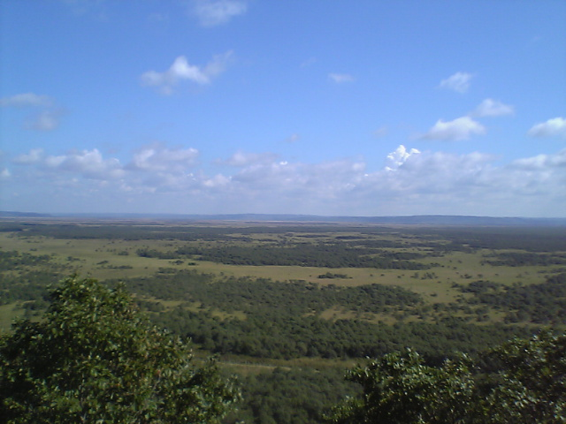
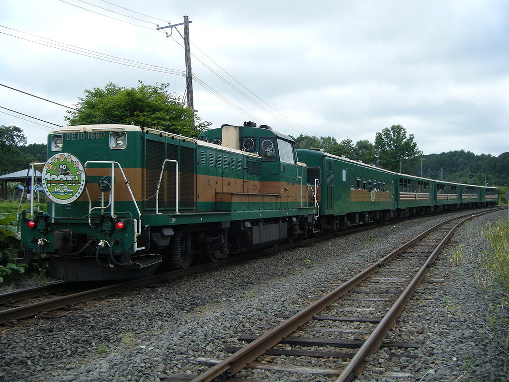

釧路市
更新日:
概要
釧路市は，豊かな自然と独自の文化が息づく，北海道の東部に位置する美しい街である．
目次
釧路湿原
釧路湿原は，釧路市に広がる日本最大級の湿原で，独特な生態系と豊かな自然景観を有しており，環境保全と観光の双方で高い評価を受けている．

釧路湿原（Photo by 俊. CC BY-SA 3.0. ref.Wikipedia）
くしろ湿原ノロッコ号
くしろ湿原ノロッコ号は，釧路湿原を走る観光列車で，四季折々の美しい風景を楽しむことができる．

くしろ湿原ノロッコ号（Photo by 欅. CC BY-SA 3.0. ref.Wikipedia）